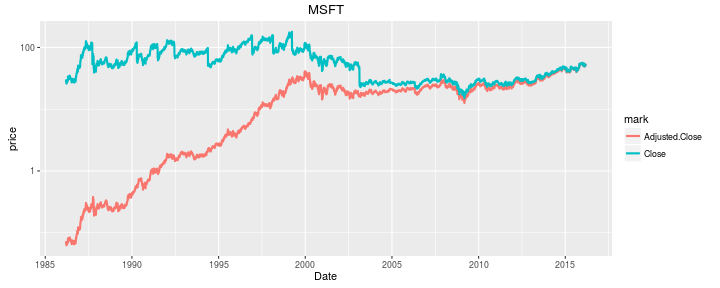

My background
- Former applied mathematician. (IUB graduate!)
- Quant Programmer & Quant Strategist 2007-2015 at two small hedge funds.
- Almost pure quant funds, ML-based, in U.S. ("single name") equities and volatility futures.
- Tried many ML technologies to construct strategies: SVM, random forests, GP.
- Also traditional statistical approaches: plain old regression.
- Whatever the approach, we used backtests. (GP used them heavily.)
What makes a profitable strategy?
- Need prediction of future price movements.
But also:
- Turn the predictions into trades.
- No, really, turn the predictions into trades.
- Eliminate or reduce exposure to certain risks.
- Control trade costs. (commissions, short financing, market impact.)
Hard to estimate the effects of the different moving parts separately.
So simulate your trading historically: A backtest.
Backtesting basically implies quantitative strategies: you cannot backtest discretionary trading.
Backtests
A backtest probably should:
- simulate the effects of your actions (orders submitted).
- simulate the actions of the world (fills, commissions, corporate actions, etc.).
- translate in an obvious way to a real trading strategy.
- provide an absolute guarantee of time safety.
Creating a good backtesting environment requires:
- Software engineering: balance time safety, computational efficiency and developer sanity.
- Domain knowledge and data: How should you simulate fill? How do corporate actions work?
- Great statistical powers: How do you interpret the results? How do you avoid overfitting?
- Good intuition and sleuthing abilities: What new thing is broken?
Different kinds of backtests

Garbatrage
Use Bayes' Rule:
- Devising a consistently profitable trading strategy is known to be hard.
(The EMH posits that it is essentially impossible.) - Bugs are easy to make. A good programmer will make several a day.
If your backtest looks profitable, what is the likelihood the strategy is really profitable?
If you are exploring a new asset class, using a new fill simulator, using new code, testing a new strategy, or reading a paper from a third party, and the backtest looks great, it's probably a bug.
An example
Should three day old tweets give you this?

Time Travel
The most common error in backtests is time travel: use of future information in simulations.
Time travel occurs for many reasons:
- Backfill and survivorship bias.
- Representation of corporate actions: dividends, splits, spinoffs, mergers, warrants.
- Think-os and code boo boos.
Time travel is easy to simulate, but hard to implement!
Survivorship and Backfill
- Classic survivorship bias: trading on a universe of stocks defined by present membership in some index, say.
- Data vendors often backfill data for companies or remove them. (You can test for this, or just ask them!)
- Vendors may do weird things to deal with mergers (or you may!)
Corporate Actions
- Corporate actions are notoriously time-leaky.
- Problems stem from representing asset returns as a single time series: in reality, they branch across time.
- Corporate actions are just hard to model.
For example, (back) adjusted closes. Investing inversely proportional to adjusted close gives a time-travel 'arb'.

The ML Hacker Trap
- Align returns to features for training ML models.
- Forget that the model is timestamped to the returns.
- A warning: the more often I retrain, the better my model! (Often with an excuse for 'time freshness'.)

The ML Hacker Trap
- Align returns to features for training ML models.
- Forget that the model is timestamped to the returns.
- A warning: the more often I retrain, the better my model! (Often with an excuse for 'time freshness'.)

Break!
Time permitting, talk about overfitting later.
Turn it over to Zak for the next part.
Again!?

Plain Old Overfitting
When backtests are fixed, you can move on to overfitting.
Overfitting has two flavors (to me):
- Building a decent model for the assets and features used, but overestimating future performance based on in-sample data. (Using same data to build model and estimate it's Sharpe.)
- Adding opportunities decreases the expected Sharpe due to the added degrees of freedom.
A Quant's Kōan:
Ignore data and your model is suboptimal. Use all the data: your model is suboptimal.
Plain Old Overfitting
Overfit is not cured by silly ML tricks:
You can talk about hold-out sets and in-sample all you want. There is no out-of-sample. There is in-sample and trading-real-money-on-the-strategy.
Overfit is approached as a technical problem, but fighting it requires discipline and soft engineering skills: If you don't keep track of everything you have tried, you can't apply most techniques.
Some Terminology
As an approximation, suppose that the returns of an asset (a strategy, stock, ETF, whatever) are constant over time.
Typically use \(\mu\) for the expected value, and \(\sigma^2\) for the variance of the returns.
Informally, the Sharpe ratio is defined as \[ \zeta = \frac{\mu - r_0}{\sigma}, \] where \(r_0\) is the 'risk-free' or 'disastrous rate' of return.
(Formally, I tend to use 'Sharpe' to refer to a sample statistic, and 'signal-noise-ratio' to refer to population quantities. Let's not be so pedantic here.)
Technical Approaches
Two forms of the problem I was interested in:
- For automated strategy search: having observed the in-sample Sharpe of \(n \gg 10^4\) strategies, possibly selected by hill-climbing in-sample Sharpe, could we de-bias the Sharpe of the optimal one? Or could we select some top \(k\) of them and 'average' the strategies?
- For human strategy search: having observed the returns of \(n \ge 10^3\) strategies, along with the settings of some 'knobs' for each of them, could we estimate the effects of each knob? Could we pick the best knob setting and de-bias the estimated future Sharpe?
I suspected classical approaches (WRC and extensions, Hansen's SPA, etc.) would not work: different input, wrong assumptions, wouldn't scale.
Optimal Sharpe over many correlated strategies
Suppose you observed the time series of returns of \(n \gg 10^4\) strategies, each of length \(T\), in \(T \times n\) matrix \(X\).
Think of a dimensionality reduction, where \(X\) is nearly contained in some \(k\) dimensional subspace, with \(k \ll T\): \[ X \approx L W, \] where \(L\) is \(T \times k\), and \(W\) is \(k \times n\).
You can think of returns in \(X\) as portfolios over latent returns in \(L\) with portfolio weights \(W\).
What is the maximal Sharpe over \(k\) assets?
Optimal portfolio Sharpe
Optimal Sharpe over \(k\) assets is achieved by the Markowitz portfolio. Distribution is related to Hotelling's \(T^2\).
As an aside, interesting connections between quant metrics (the 'right' ones) and classical statistics:
| quant world | classical statistics |
|---|---|
| Sharpe ratio | \(t\) statistic |
| squared Sharpe of Markowitz Portfolio | Hotelling \(T^2\) |
| expected squared Sharpe, conditional on features | Hotelling-Lawley Trace |
Optimal portfolio Sharpe
Optimal Sharpe over \(k\) assets is achieved by the Markowitz portfolio. Distribution is related to Hotelling's \(T^2\).
We know the distribution of the (in-sample) Sharpe of the Markowitz portfolio as a function of \(k\), \(T\), and the (population) Sharpe of the (population) Markowitz portfolio.
We also have good estimators of, and confidence intervals around that population optimal Sharpe given the in-sample statistics. (Given in SharpeR for example.)
Note that the \(X\) did not need to be observed, only the optimal Sharpe over \(X\). (Downside: have to estimate \(k\))
Human overfitting problem
Observe time series of returns of \(n \approx 10^3\) strategies, each of length \(T\), in \(T \times n\) matrix \(X\). Also observe \(f \approx 50\) 'features' on each asset in \(f \times n\) matrix \(F\).
Modeling the Sharpe of each asset as some linear function of the features in \(F\). If \(\mathbf{\zeta}\) is the \(n\)-vector of Sharpes, we have \[ \mathbf{\zeta} \approx F^{\top} \beta \] for some unknown \(f\)-vector \(\beta\).
Human overfitting problem
When \(n\) is reasonable, from \(X\) you can compute the vector of sample Sharpes \(\mathbf{\zeta}\) and the \(n\times n\) matrix of variance-covariance, \(\Omega\). (Classical asymptotic result of Jobson & Korkie.)
Then regress \(\mathbf{\zeta}\) against \(F^{\top}\), and the variance-covariance around estimated \(\beta\) is \[ \left(F^{\top}F\right)^{-1} F^{\top} \Omega F \left(F^{\top}F\right)^{-1} \]
Result is estimate of the effects of each feature and variance-covariance around them.